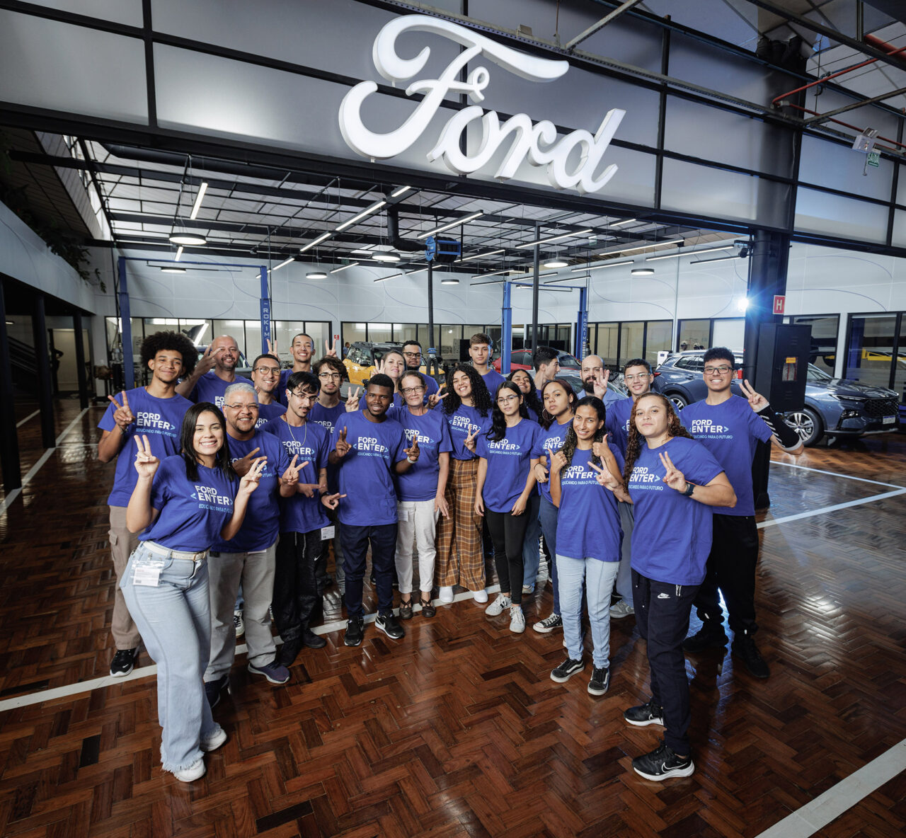
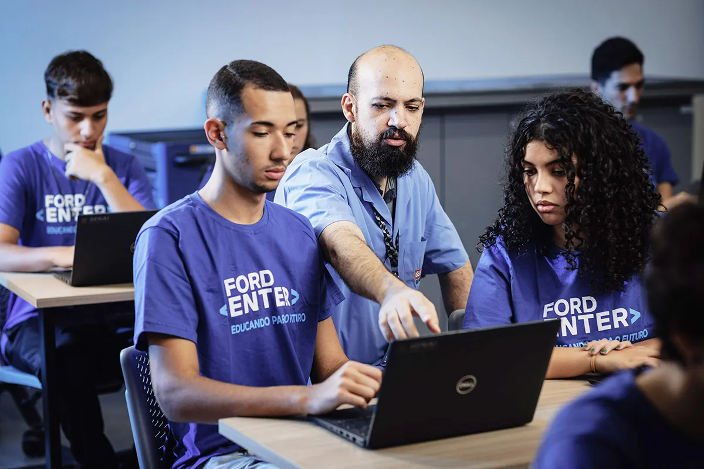

Ford Company
Curso Ford Enter
O Ford é um programa gratuito de capacitação na área de tecnologia desenvolvido pela Ford Brasil e pelo Ford Motor Company Fund, braço filantrópico da companhia, em parceria com o SENAI-SP, com objetivo de abrir novos caminhos profissionais para pessoas em situação de vulnerabilidade social.
Front-end é o desenvolvimento da interface gráfica (parte visual) de um site ou aplicativo, o que inclui os elementos que possibilitam interação com o usuário. Por exemplo, a área de pesquisa ou formulário.
No curso, os participantes são capacitados em programação front-end, recebem treinamento comportamental e ainda têm acesso a diversas oportunidades. Confira:
-
Ajuda de custo para transporte e alimentação
- Curso de inglês técnico
- Acompanhamento pedagógico e socioemocional
- Programa de mentoria
- Palestras e visita à empresa de tecnologia
- Oportunidade de entrar no mercado de trabalho
- Possibilidade de formação adicional em back-end*
- Os alunos podem escolher entre os períodos matutino, vespertino ou noturno (respeitando os limites das vagas)

